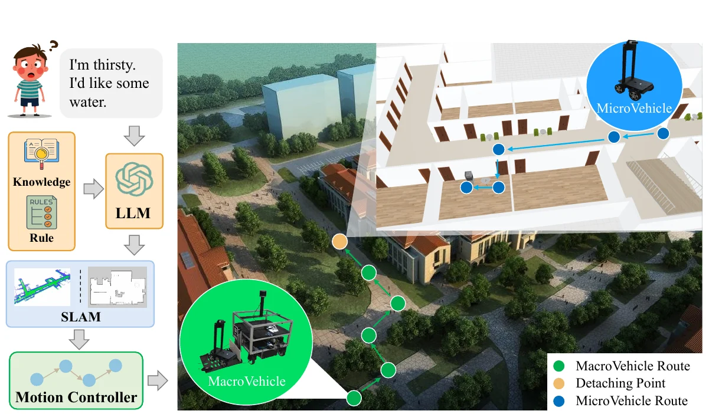
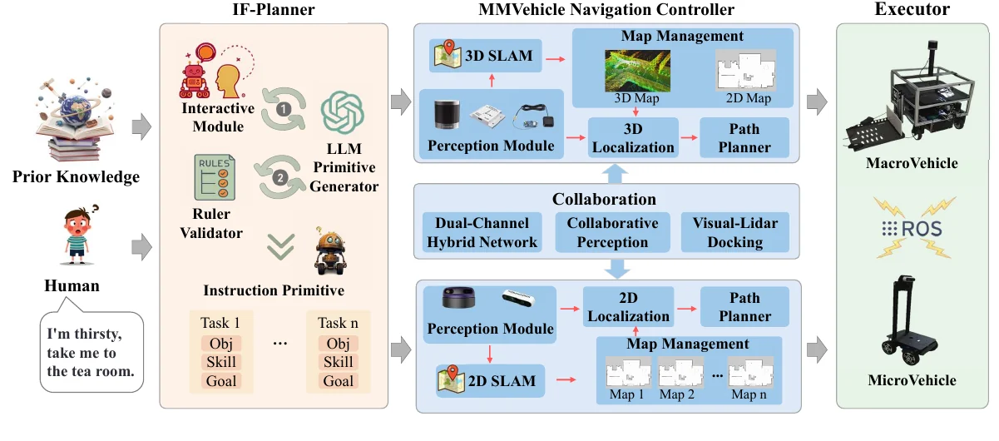
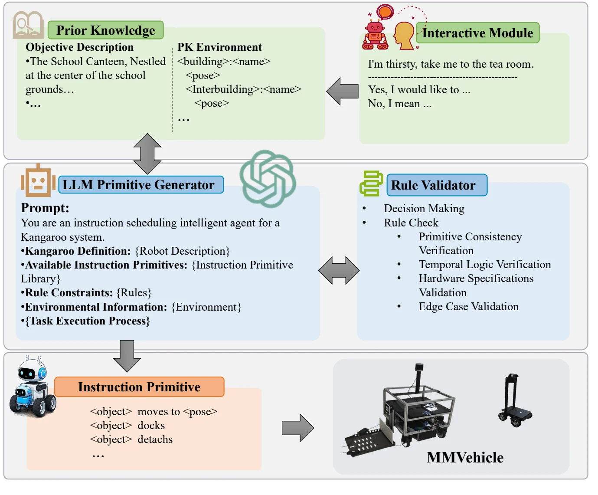
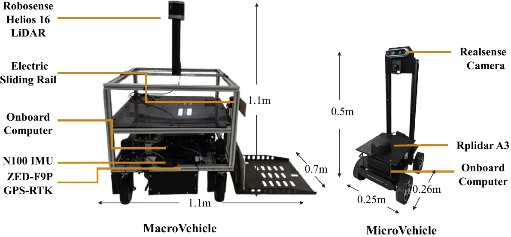
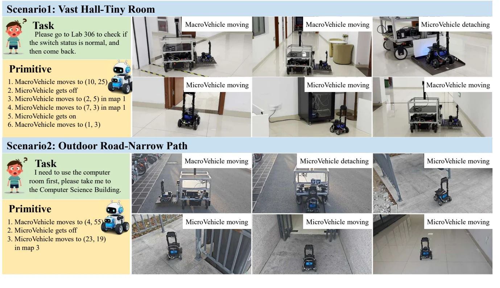
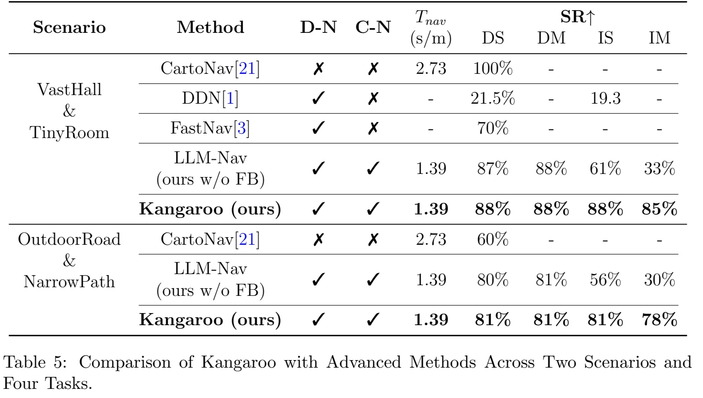

研究论文Research Paper
Kangaroo: Demand-Driven Cross-Environment Navigation for Macro-Micro Vehicles Enhanced by Large Language ModelsKangaroo: Demand-Driven Cross-Environment Navigation for Macro-Micro Vehicles Enhanced by Large Language Models
Engineering Applications of Artificial IntelligenceEngineering Applications of Artificial Intelligence中科院1区CAS Zone 1
面向跨室内外的子母车协作导航，以大语言模型反馈规划和多传感器 SLAM 衔接大范围运输与狭窄空间任务；两类真实场景成功率为85–88%和78–81%。For macro–micro navigation across indoor and outdoor spaces, language-model feedback planning and multi-sensor SLAM connect long-range transport with confined-space tasks; success rates are 85–88% and 78–81% in two real-world settings.
任务说明Task
机器人需要从“我想喝水”等自然需求中确定服务目标，并连续穿越室外道路、宽阔大厅和窄通道。大车适合长距离运输，小车便于进入受限区域，因此任务同时涉及需求理解、车辆分工和跨环境导航。A robot must translate natural demands such as “I am thirsty” into service goals and traverse outdoor roads, large halls, and narrow passages. A macro vehicle handles long-range transport, while a micro vehicle enters confined spaces; the task requires demand understanding, role allocation, and continuous navigation.
系统接收需求指令与场景知识，生成两车可执行的运动原语。母车到达释放点后，子车离车执行末端任务，再通过协同感知与对接完成任务衔接。The system receives a demand and environmental knowledge and generates executable motion primitives for both vehicles. The macro vehicle transports the micro vehicle to a release point; the micro vehicle performs the last-mile task, supported by collaborative perception and docking.
主要方法和贡献Approach and Contributions
- 建立子母车跨环境协作框架，将大范围运输能力与狭窄空间通行能力结合。A macro–micro vehicle framework connects long-range transport with access to confined spaces.
- 设计迭代反馈规划器 IF-Planner，将人的意图澄清、外部场景知识和规则校验接入大语言模型的运动原语生成。IF-Planner combines human intent clarification, external scene knowledge, and rule validation with language-model motion-primitive generation.
- 构建真实子母车平台，以混合 SLAM、双通道通信、协同感知及视觉–LiDAR 对接支持规划执行。A physical platform uses hybrid SLAM, dual-channel communication, collaborative perception, and visual–LiDAR docking to execute the generated plan.

主要方法Method
IF-Planner 先通过交互模块解析需求，再结合场景知识生成动作序列。规则校验器检查原语一致性、时序关系、硬件约束和边界情况，把错误反馈给生成器迭代修正，最终得到动作与目标组成的原语。IF-Planner first clarifies a demand through interaction, then generates an action sequence using scene knowledge. A rule validator checks primitive consistency, temporal relations, hardware constraints, and edge cases. Validation feedback iteratively revises the sequence into executable action–goal primitives.
导航层分别采用适应大尺度环境的三维 SLAM 与适应狭小空间的二维 SLAM，并通过地图管理和协同感知共享环境信息。通信、任务分配与视觉–LiDAR 对接共同协调两车的移动与接驳。The navigation layer uses 3D SLAM for large environments and 2D SLAM for confined spaces, with map management and collaborative perception sharing environmental information. Communication, task allocation, and visual–LiDAR docking coordinate movement and vehicle transfers.



实验结果Experiments and Results
在 VastHall–TinyRoom 与 OutdoorRoad–NarrowPath 两类真实场景中，按直接/间接表达以及单/多需求形成四类任务。完整系统在两类场景中的成功率分别为 85–88% 和 78–81%。Real-world evaluation covers VastHall–TinyRoom and OutdoorRoad–NarrowPath, with four task types combining direct/indirect expressions and single/multiple demands. Success ranges from 85–88% and 78–81%, respectively.
在间接多需求任务中，加入反馈后，VastHall–TinyRoom 的成功率由 33% 提升至 85%，OutdoorRoad–NarrowPath 由 30% 提升至 78%。独立导航模块测试中，母车导航成功率为 92.7%，子车为 100%。For indirect multiple-demand tasks, feedback raises success from 33% to 85% in VastHall–TinyRoom and from 30% to 78% in OutdoorRoad–NarrowPath. Separate navigation-module evaluation obtains 92.7% success for the macro vehicle and 100% for the micro vehicle.
| 场景Scenario | 直接单需求Direct single | 直接多需求Direct multiple | 间接单需求Indirect single | 间接多需求Indirect multiple |
|---|---|---|---|---|
| VastHall–TinyRoomVastHall–TinyRoom | 88%88% | 88%88% | 88%88% | 85%85% |
| OutdoorRoad–NarrowPathOutdoorRoad–NarrowPath | 81%81% | 81%81% | 81%81% | 78%78% |

